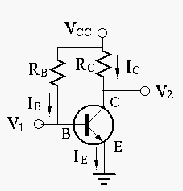
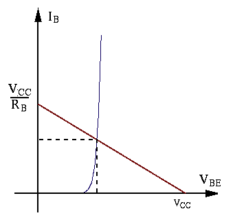
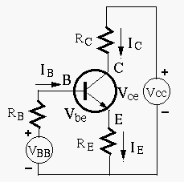
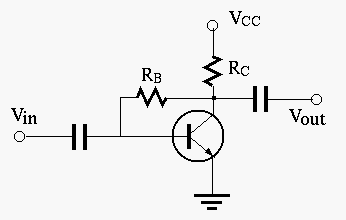

Next: Small-Signal Model and H Up: ch4 Previous: AC Signal Amplification
As shown before, the DC operating point of a transistor amplification circuit needs to be set up properly (in the middle of the linear region) to avoid signal distortion. We now consider how the operating point is determined by the biasing circuit, in terms of , , and .
Fixed Biasing

By properly setting the voltage (not too low) and (not too
large), the voltage  can be approximated as a constant value of
can be approximated as a constant value of
 , as shown in the input characteristic plot:
, as shown in the input characteristic plot:

Then the base current can be estimated to be:
| (29) |
 times
times  if the transistor is in linear
region:
if the transistor is in linear
region:
| (30) |
| (31) |
 and
and  depend on , which may differ for different
transistors and change depending on the temperatures the operating point may
be unstable and inconsistent.
depend on , which may differ for different
transistors and change depending on the temperatures the operating point may
be unstable and inconsistent.
Example 1
In the fixed biasing transistor circuit shown above, , , , find so that the DC operating point is in the middle of the linear region of the output characteristic plot, i.e., . We assume (may not be valid if is too large) and get
| (32) |
 i.e. i.e. |
(33) |
| i.e. | (34) |
| (35) |
Example 2:
In the same circuit above, , , . Find the operating point for .
The load line is determined by these two points:
| (36) |
values:
| (37) |
To minimize distortion, the DC operating point needs to be in the middle of the load line at . But in this case, we see that
The DC operating point of this fixed biasing circuit is not
completely determined by the parameters of the circuit such as
the resistors, as it is also directly affected by factors such
as value and temperature. This situation can be improved
by introducing negative feedback into the circuit.
Self-Biasing
To correct the problem above, the self-biasing circuit shown below
can be used to decrease the effect of changing by negative
feed back due to the introduction of .

Qualitatively, an increased (caused by reasons such as
increased due to temperature change) will cause the following
to happen:
| (38) |
Quantitatively, we can further carry out analysis of the circuit:
 and
and  are small so that the
current through is much larger than the base current
i.e.,
, then the basis voltage
are small so that the
current through is much larger than the base current
i.e.,
, then the basis voltage  can be
approximated to be (voltage divider):
can be
approximated to be (voltage divider):
| (39) |
| (40) |
, we get
 |
(41) |
is independent of , as it is completely
determined by , , and , as well as .
| (42) |

Applying KVL to the base loop we get
| (43) |
, we get:
| and | (44) |
), then can be approximated as
| (45) |
, and thereby and the DC operating point,
is determined only by the resistors of the circuit, independent of the
. Comparing this with fixed biasing with
directly proportional to ,
the self-biasing circuit has a much more stable operating point.
For this approximation above to be valid, we desire to have smaller
so that is less affected by , and large
for stronger negative feedback. However, as the voltage gain of
the circuit will be reduced due to the negative feedback, cannot
be too large.
Example 3:
In the circuit of self-biasing, , , , , , Assume . The load line is determined by this equation:
| (46) |
 and
(short-circuit current)
and
(short-circuit current)
To minimize distortion, the desired operating point should be in the middle of the load line at and .
:
 |
 |
||
 |
|||
|
|||
 |
|
||
|
|||
|
(47) |
 |
|
||
|
|
||
|
|||
|
 |
||
|
|||
|
 |
(48) |
values
can be found to be:
| (49) |
We see that in all three cases, , , i.e., the DC operating point is always close to the middle of the load line.
Example 4
In a self-biasing transistor circuit, , , , , find so that the DC operating point is in the middle of the linear region of the output characteristic plot.
We first convert the base circuit into its Thevenin's equivalent voltage source composed of
| (50) |
| (51) |
| (52) |
Example 5
The circuit below shows yet another way to introduce feedback to stablize the DC operating point.

 to as well as providing
the forward baising needed for the base-emitter PN junction:
to as well as providing
the forward baising needed for the base-emitter PN junction:
| (53) |
| (54) |
we get
| (55) |
| (56) |
.
Although typically is significantly greater than ,
the negative feedback still has the tendency to reduce the affect
of varying and thereby stablize the DC operating opint.
We want the DC operating point to be at and , and get
| (57) |
| (58) |
| (59) |
values, which
are all approximately in the middle of the linear region:
| (60) |